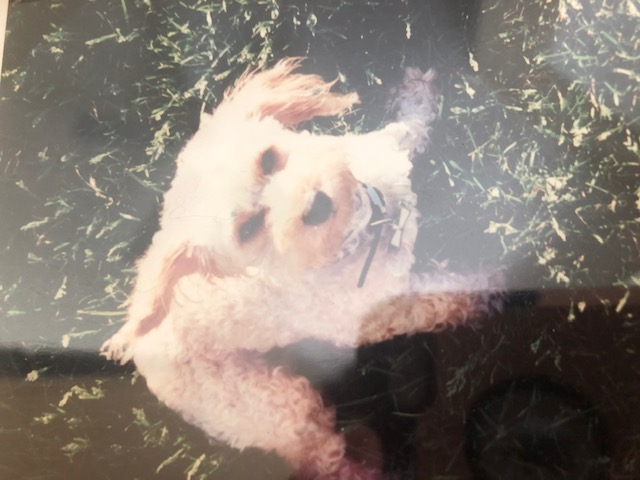
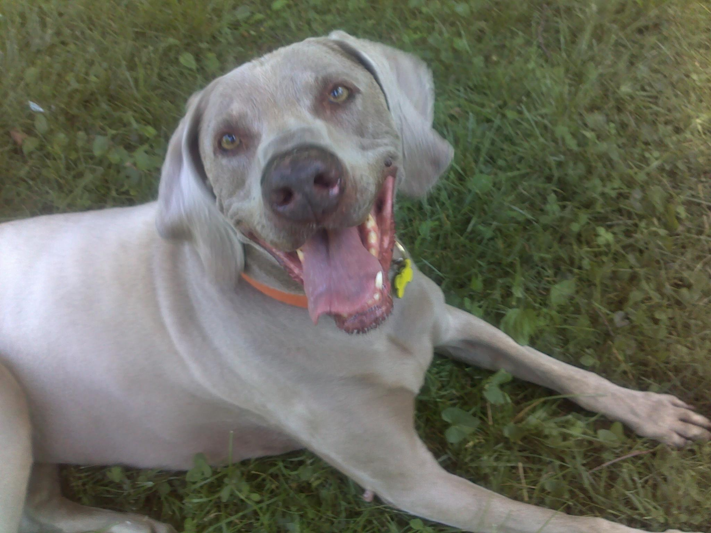

Louis was the first dog I adopted on my own. I was living in Kansas City, and missing home. So, I named him 'Louis' after St. Louis, my hometown. Louis is the dog that made me fall in love with all dogs. He was smart, sweet, a little sassy, and--as you can see--absolutely adorable. After being a pet parent to Louis, I was committed to always rescuing and saving dogs.
My Rescues
Since I was a young girl, I wanted to save every animal I came across. I was always bringing home birds with broken wings, lost cats, and wandering dogs. As an adult, my love for animals has not changed. Below are animals that are especially close to my heart. I've rescued all of them, and in turn, they've paid back the favor tenfold.
My First Dog: Louis
Ellie: From the Junkyard to the Sweet Life

I found Ellie near my downtown office, living in a junkard. As they say, one man's trash is another man's treasure. Ellie was so smart and so protective of me. I used to jokenly call her "my bodyguard". She gave every stranger the stink eye, and never allowed me to be alone with any repairman. If I went downstairs to show the HVAC man my furnace, Ellie came with me.
Joe: My Furry Child
.jpg)
Joe was a very ill dog that I decided to foster. He had a broken leg and pneumonia when I took him in. After a week, I knew I couldn't give him up, and decided to adopt him as my own. He was the sweetest, most obedient dog I've ever known. I honestly don't think I ever had to correct Joe on anything. He wanted to please so much. Joe was like a child to me. I was his protector, but I know he would have protected me if I needed him to.
Sasha: Abandoned At the Groomer
Sasha was abandoned by her owner at my groomer's storefront. The woman who owned Sasha said her husband was abusing the dog, and asked my groomer to rehome her. I would take my other dogs to my groomer, and always see Sasha there, and ask my groomer if anyone was interested in her yet. After a few months, I decided to take Sasha home with me. Sasha got along well with my other dogs. She was the friendiest dog I've ever had.
Monkey & JP: My first cats
.jpg)
Monkey and JP were found starving in a local park. I went ziplining one day, and overheard someone talking about a wayward kitten they were feeding in the park. I set a trap that night, and ended up catching two cats: a kitten, who I named Monkey, and an adult cat I named Jean Paul, or JP. Jp was named after a character named Jean Paul in the sitcom 'Seinfeld'. I'd never had cats before, and these two are a handful, but they make me laugh everyday.
Veronica: The Dog who Loves People...But Other Dogs, Not So Much

I adopted Veronica from the APA about five years ago. She was the oldest dog at the shelter, and she wasn't doing well acclimating. She was dropped off after having been with her previous owner for seven years. I took her in and she is the sweetest doggie--unless you are another dog. She is the opposite of me: she loves every person she meets, and distrusts every dog she meets!. I have to be very careful to not allow Veronica around other dogs. She loves her cat brothers, though!